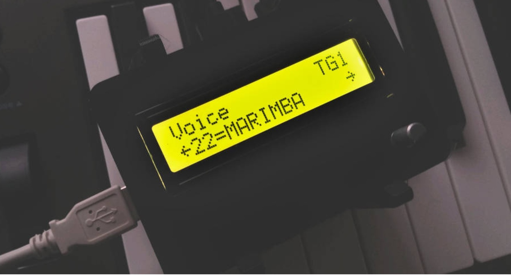

FM synthesizer closely modeled on the famous DX7

MiniDexed is a FM synthesizer closely modeled on the famous DX7 by a well-known Japanese manufacturer running on a bare metal Raspberry Pi (without a Linux kernel or operating system). On Raspberry Pi 2 and larger, it can run 8 tone generators, not unlike the TX816/TX802 (8 DX7 instances without the keyboard in one box).
- Uses Synth_Dexed with circle-stdlib - SD card contents can be downloaded from GitHub Releases - Runs on all Raspberry Pi models (except Pico); see below for details - Produces sound on the headphone jack, HDMI display or audio extractor (better), or a dedicated DAC (best) - Supports multiple voices through Program Change and Bank Change LSB/MSB MIDI messages - Loads voices from .syx files from SD card (e.g., using getsysex.sh or from Dexed_cart_1.0.zip) - Menu structure on optional HD44780 display and rotary encoder - Runs up to 8 Dexed instances simultaneously (like in a TX816) and mixes their output together - Allows for each Dexed instance to be detuned and stereo shifted - Allows to configure multiple Dexed instances through performance.ini files - Compressor effect - Reverb effect - Voices can be edited over MIDI, e.g., using the synthmata online editor (requires additional hardware)
All DB data
- Name: Mini Dexed
- Author: Probonopd
- Link: https://github.com/probonopd/MiniDexed
- Demo: https://www.youtube.com/watch?v=Z3t94ceMHJo
- Picture: ../pics/mini-dexed.jpg
- Description: FM synthesizer closely modeled on the famous DX7
- Notes: **MiniDexed is a FM synthesizer closely modeled on the famous DX7 by a well-known Japanese manufacturer running on a bare metal Raspberry Pi (without a Linux kernel or operating system). On Raspberry Pi 2 and larger, it can run 8 tone generators, not unlike the TX816/TX802 (8 DX7 instances without the keyboard in one box).
- Uses Synth_Dexed with circle-stdlib - SD card contents can be downloaded from GitHub Releases - Runs on all Raspberry Pi models (except Pico); see below for details - Produces sound on the headphone jack, HDMI display or audio extractor (better), or a dedicated DAC (best) - Supports multiple voices through Program Change and Bank Change LSB/MSB MIDI messages - Loads voices from .syx files from SD card (e.g., using getsysex.sh or from Dexed_cart_1.0.zip) - Menu structure on optional HD44780 display and rotary encoder - Runs up to 8 Dexed instances simultaneously (like in a TX816) and mixes their output together - Allows for each Dexed instance to be detuned and stereo shifted - Allows to configure multiple Dexed instances through performance.ini files - Compressor effect - Reverb effect - Voices can be edited over MIDI, e.g., using the synthmata online editor (requires additional hardware)**
- Artifacts: {“Schematic”=>true}{“PCB”=>false}{“BOM”=>true}{“FW”=>true}{“Docs”=>true}{“Enclosure”=>true}
- Tags: DigitalRaspberryMIDI
- Level: Newbe
{kind=link}